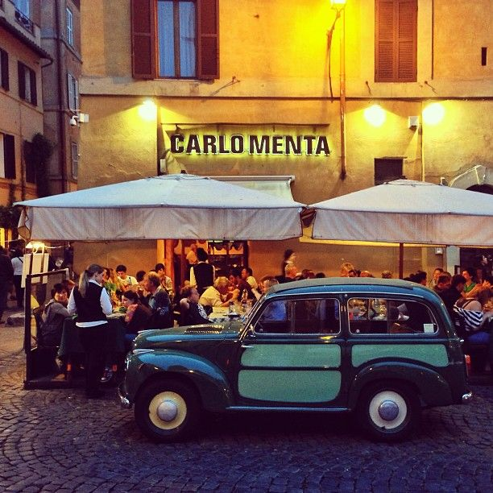

Gino 51
- Gino Angeloni began in 1951, his experience as a young enterprising restaurateur in Rome, in the same place where he still stands, in via della Lungaretta, in the heart of the city "er core de 'Roma", in Trastevere.
Over the years the restaurant has changed its appearance several times, keeping intact the founder's philosophy: dishes rigorously made with fresh ingredients from the Roman countryside.
The restaurant, has always remained property of the Angeloni family.
Claudio and Massimo, sons of the founder, currently manage this historic venue, together with their friend Paolo Rossi.
Personally this was the nicest pizza i have ever ate in my life when i visit again it will be my first stop.They had a really tasty starter called riso a small ball of risotto and meat.

Ristorante Carlo Menta
- Ristorante Carlo Menta is a gem of a restaurant in the heart of Rome in trastevere. They have beautiful food for astonishing cheap prices .there is a real authentic feel and atmosphere to the restaurant with a vintage italian car parked outside.
Tonnarello
- Tonnarello is a real italian authentic Restaurant which has been open since 1876.they have beautiful tasting pasta dishes and really big deep dish pizza.They have a gorgeous outdoor eating area which adds to the atmosphere.
After eating in either of these three restaurants i would recommend getting an ice cream in blue and enjoy the street acts while you sit eating your ice cream on the steps of the Fountain in Piazza Santa Maria
Giolitti
-
It all began back in 1890 when Giuseppe and Bernadina Giolitti opened a creamery on the Salita del Grillo, where they sold milk from their own pastures in the Roman countryside. Very soon, thanks to the quality of the products, the creamery was supplying the Italian royal family.
Within a few years, new “Giolitti” stores opened, among which the historic home of the family business at Via Uffici del Vicario 40. It was here that Nazzareno Giolitti and his wife Giuseppina decided to add a vegetarian restaurant to the creamery and begin the production of ice cream.
This ice cream shop is located near the trevi fountain and is the best ice-cream i have tried .Each flavour is unique and tastes just like the real thing.

Shisha Bar Lungo Il Tevere
- This shisha bar is a ideal place for a drink.The bar is located on the lungo il tevere by the river tiber.
It is right next to where the river drops creating a waterfall which is magnificent.
you can sit up against the wall of sit in the bar and get drinks and shishas.There is also belly dancers performing as you watch the world go by.